Префектура Сидзуока · Сидзуока · еда
KAWASAKI в Сидзуоке: шеф, который сам охотится на дичь для своего меню
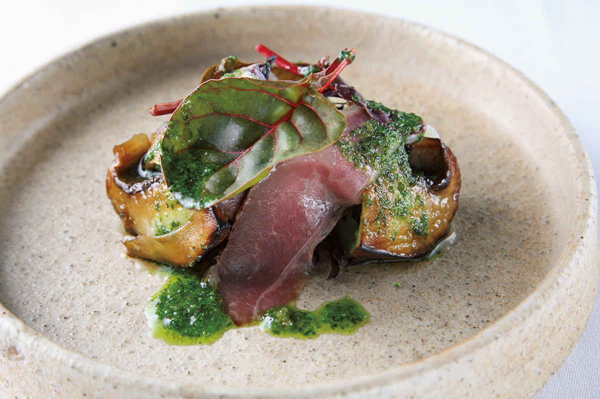
В нескольких минутах от станции Сидзуока работает ресторан, где большую часть дичи шеф добывает сам. Его день начинается с рассветом на охотничьих угодьях у подножия Фудзи, а заканчивается у плиты.
Шеф
Охотник у плиты
Ресторанный критик, которая годами ищет по Японии неожиданно сильные рестораны, услышала, что у самой станции Сидзуока есть «ресторан дичи и овощей». Первая мысль была простой: почему в центре города? Ответ нашёлся в биографии владельца и шефа Ёсинори Кавасаки.
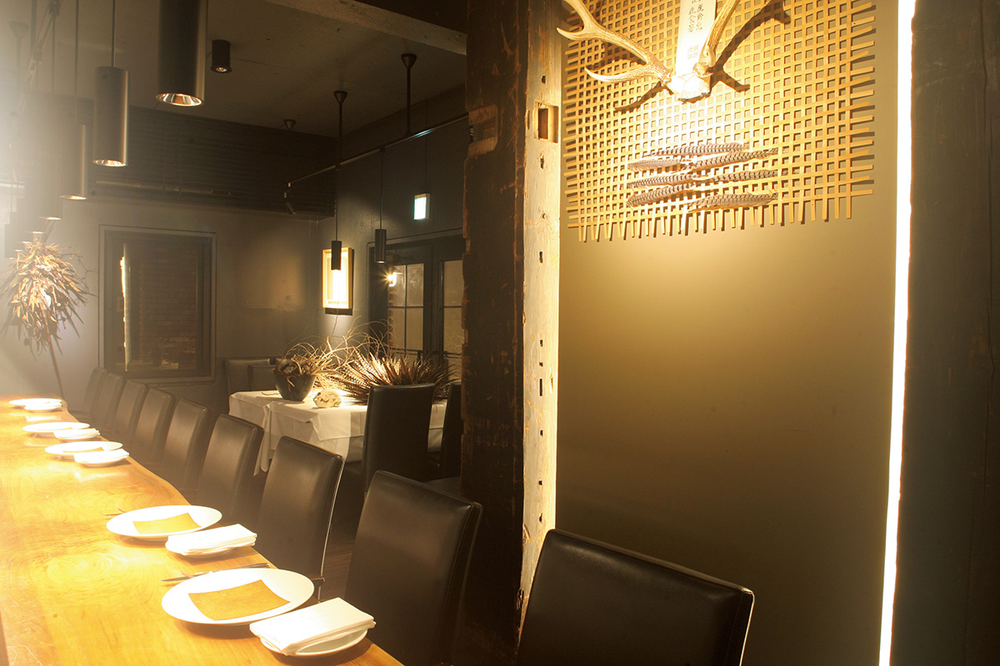
Когда Кавасаки работал на кухнях Токио, он попробовал органические овощи фермы «Биофарм Мацуки» и был так ими поражён, что стал проводить на её полях все выходные. Однажды ему предложили возглавить ресторан «Биос», который ферма строила на своей земле, и в 29 лет он стал шефом. Критик, как выяснилось, уже брала у него интервью в 2009 году. Тогда молодой повар с улыбкой говорил: «Выходишь из кухни, а за дверью поле. Каждый день находишь, что у растущего овоща вкусна какая-то совсем неожиданная часть».
Шефом «Биоса» он проработал четыре года, а в 2014 году открыл собственный ресторан. Тема его: дичь и овощи, причём дичь в основном та, которую он подстрелил сам. Критик приехала в разгар охотничьего сезона, и шеф работал на пределе сил.
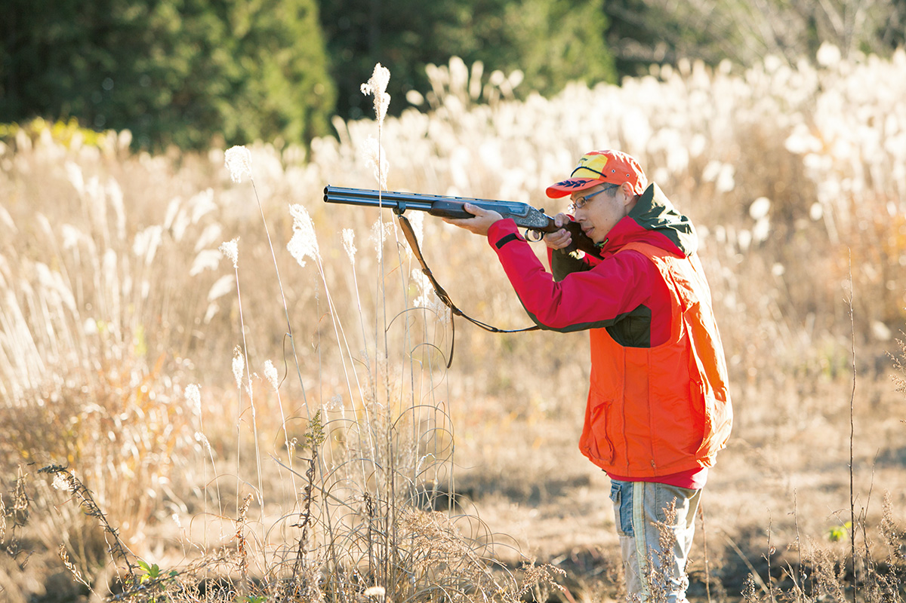
День Кавасаки начинается с восходом солнца. Чтобы охотиться ежедневно, он живёт в Фудзиномии, у подножия Фудзи, рядом со своими угодьями. Время в лесу, в погоне за добычей, для него особенное.
«Я хожу на охоту, чтобы понять, что любит эта птица и в какой среде она выросла»
шеф ресторана
Такое знание и превращает блюдо в историю. После охоты шеф объезжает четырёх поставщиков овощей. Два хозяйства из них принадлежат бывшим коллегам по «Биофарм Мацуки».
«Иногда два часа дороги туда и обратно между домом и рестораном даются тяжело. Но в будущем я хочу открыть в Фудзиномии обержу»
шеф ресторана
Раз решил, доводит до конца, и в итоге получает продукты, которые трудно найти где-то ещё. Закупка, хранение, готовка: всё это шеф делает один. Дичь, выросшая на воздухе и воде Фудзиномии, на его тарелках передаёт смену сезонов, а весной её сочетают с горными травами. Так что приезжать сюда хочется в каждое время года.
Курс
Одна зима в одиннадцати тарелках
Курс из дичи стоил в 2021 году 12 000 иен без налога, с обслуживанием. Из 11 блюд, от амюз-буша до десерта, дичь есть примерно в семи, а 90% продуктов привозят из Фудзиномии. Морскую рыбу шеф в принципе не использует, только пресноводную. Её он сам не ловит и берёт на рыбоводных хозяйствах. Вкус дикой птицы здесь деликатный, без грубости, и удивляют прежде всего сочетания.
Самая интересная зимняя дичь здесь буроухий бюльбюль. Эти птицы клюют мандарины в садах Симидзу, приморского района Сидзуоки, и в их мясе, говорят, чувствуется цитрус. Похоже, глядя на тушку, шеф сам увидел мандариновый сад и птиц в нём, поэтому добавил в суп каплю апельсинового ликёра. Пробуя этот биск, как будто на мгновение разделяешь с шефом его утро: закроешь глаза, и перед тобой тот самый пейзаж.
1. Дары гор
Курс начинается с изящных закусок на один укус. Гриб тонби-майтакэ с плотной волокнистой мякотью и корень лопуха шеф заворачивает в хамон из свинины собственной засолки, и при каждом укусе раскрывается аромат. Рядом на тонкой лепёшке из муки и яичного белка лежит заливное из бульона медвежьей лапы.
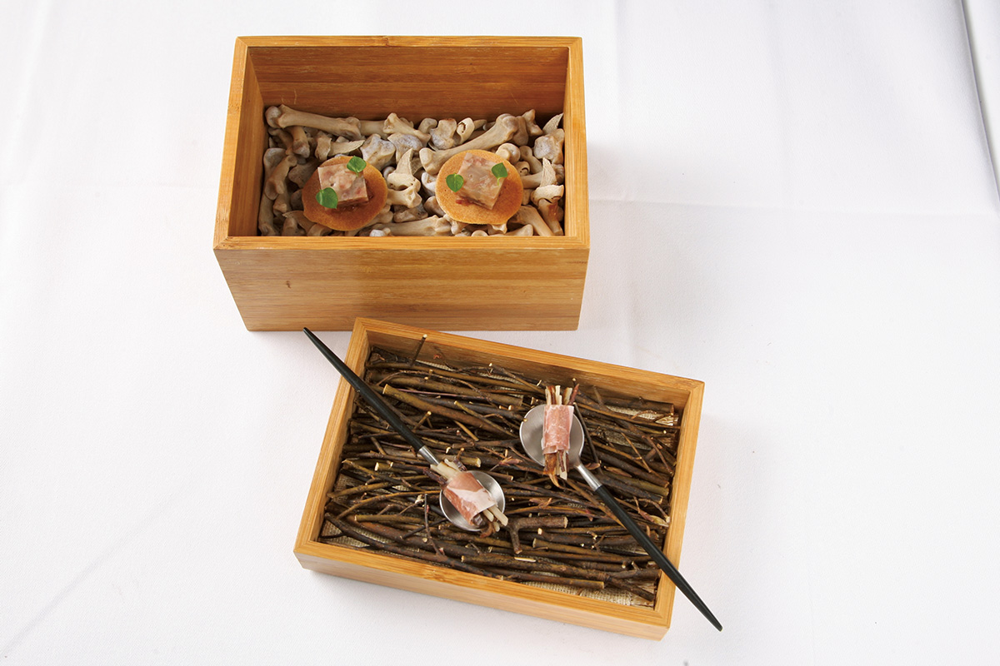
2. Дичь
Террин подают только зимой, в охотничий сезон, и набор дичи в нём каждый раз разный: гималайский медведь, хонсюйский олень с подножия Фудзи, кабан из Симоды, кряква, пятнистоклювая утка, чирок, фазан.
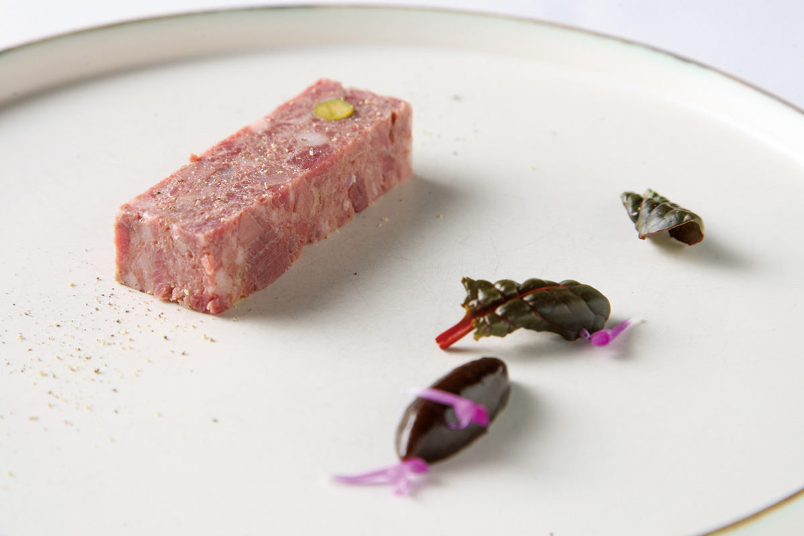
3. Радужная форель
Рыбные блюда шеф готовит только из пресноводной рыбы Фудзиномии: радужной форели или гольца. Половину этой форели он запекает до состояния, напоминающего лосося, а вторую оставляет почти сырой, и это требует большой точности.
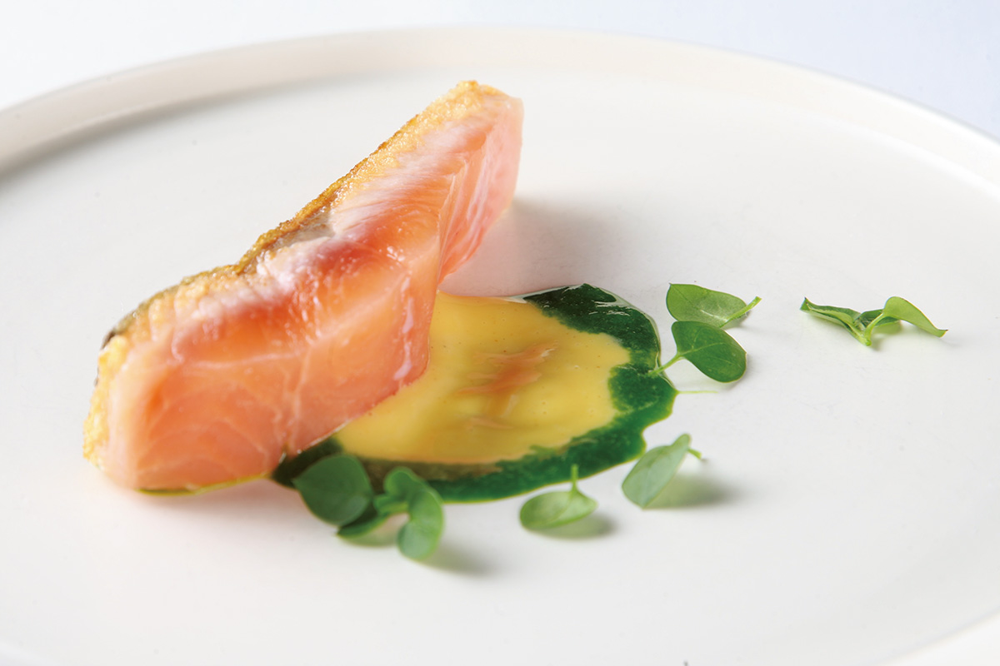
4. Медведь и портобелло
Медведь единственная дичь не из Фудзиномии: шеф берёт только зверя, которого добыл на севере Японии охотник, которому он доверяет. В сезон 2020–2021 годов гималайские медведи были в очень хорошей форме. Из грудинки делают бекон и обжаривают его с портобелло, гигантскими шампиньонами с грибной фермы в городе Фудзи. Гриб размером с кулак весит 250 г, и насыщенный жир медвежьего бекона ему очень к лицу.
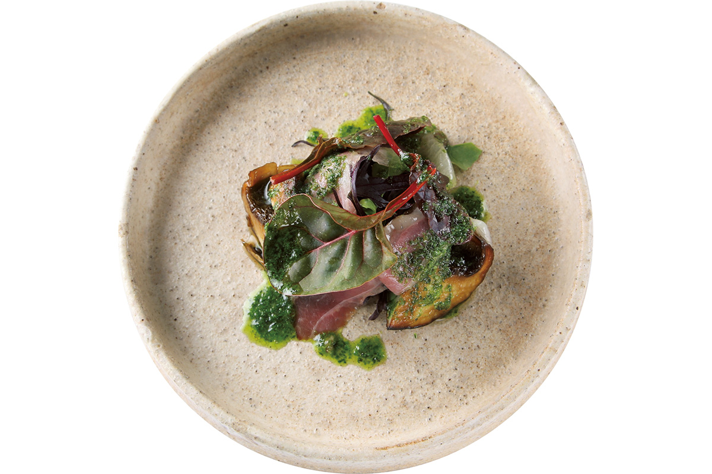
5. Бюльбюль
Биском обычно называют суп из ракообразных на сливках. Здесь его варят из бюльбюлей, которые клевали мандарины Симидзу.
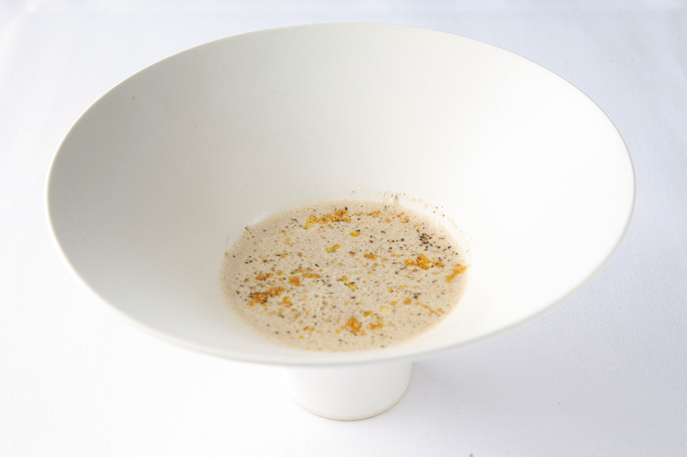
«Когда из птицы варишь бульон, в нём слышится лёгкий аромат мандарина. Поэтому в конце я добавляю апельсиновый ликёр»
шеф ресторана
6. Овощи
Эту тарелку собирают только из органических овощей четырёх ферм, которым шеф доверяет: свёкла, лопух, лук, таро, батат, репа и другие, запечённые на сливочном масле.
«Если каждый овощ сам по себе не вкусный, блюдо не сложится. Эта тарелка держится на фермерах»
шеф ресторана
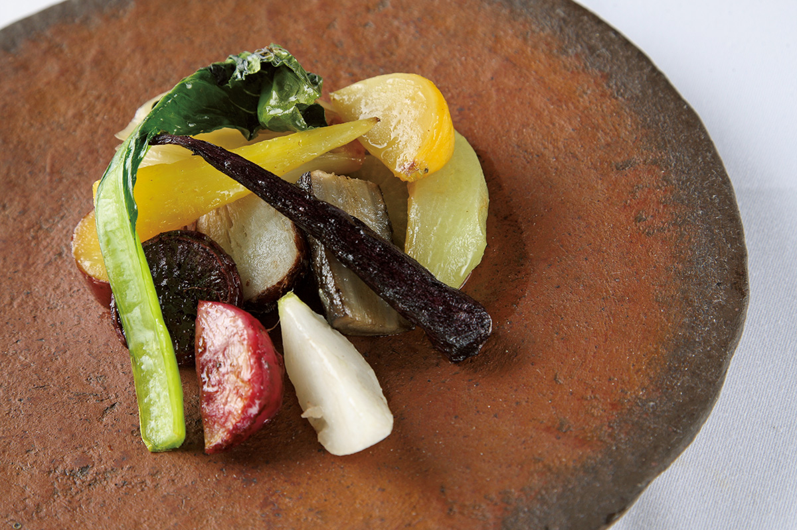
7. Большая горлица
Главная дичь курса это большая горлица. Её жарят просто, без масла, чтобы кожа хрустела. Единственный акцент дают дымком горящей соломы. Ножки вкуснее всего брать руками и обгладывать.
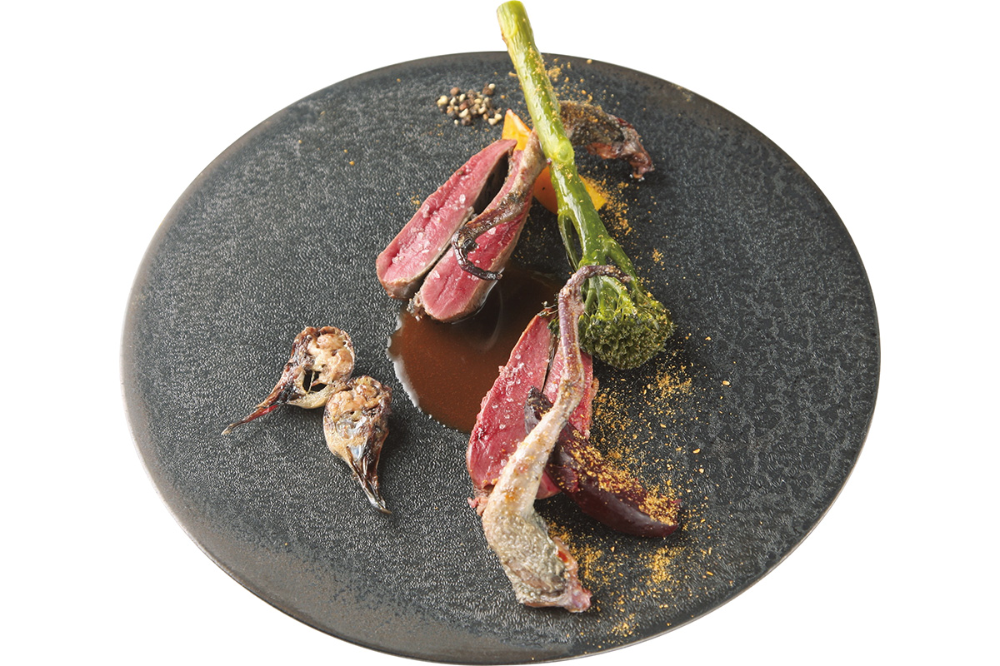
8. Хонсюйский олень
Оленью голень тушат со специями, добавляют рис и доводят до густой рисовой каши. В конце её приправляют сио-кодзи, солёной рисовой закваской, и кладут сверху листья сэри, японской водяной петрушки. Это популярное завершение курса, а у кого разыгрался аппетит, может заказать ещё и рамэн.
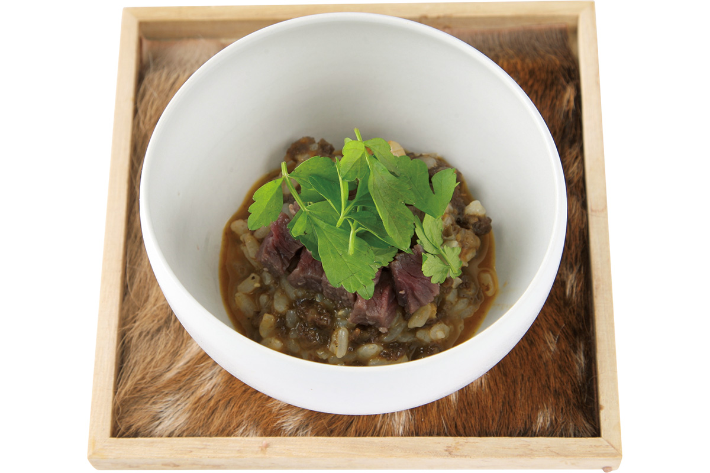
9. Кабан, олень, птица
В 2021 году в конце курса уже можно было заказать рамэн из дичи. Бульон из кабана и оленя получается лёгким, почти как консоме. Сверху кладут рулет из птицы, начинённый фаршем из оленины и кабана и приготовленный как японская тушёная свинина.
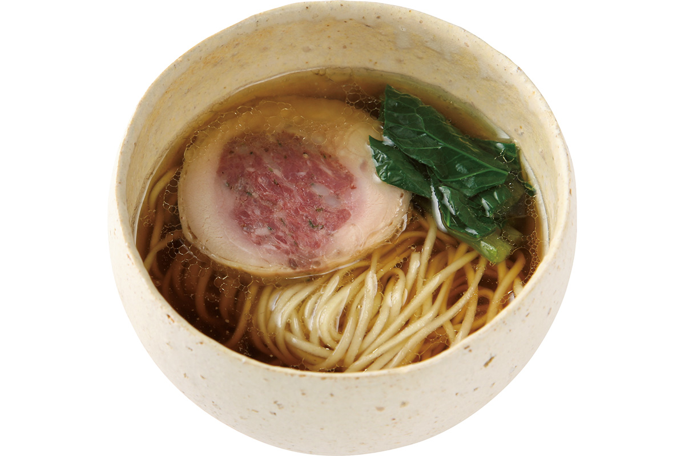
10. Печёный баклажан
Этот десерт шеф придумал в сезон, когда баклажанов было очень много. Их закупают партией и превращают в мороженое для хранения. Аромат печёного баклажана в нём сохраняется полностью, а имбирный сок, который подают рядом, делает вкус баклажана ярче.
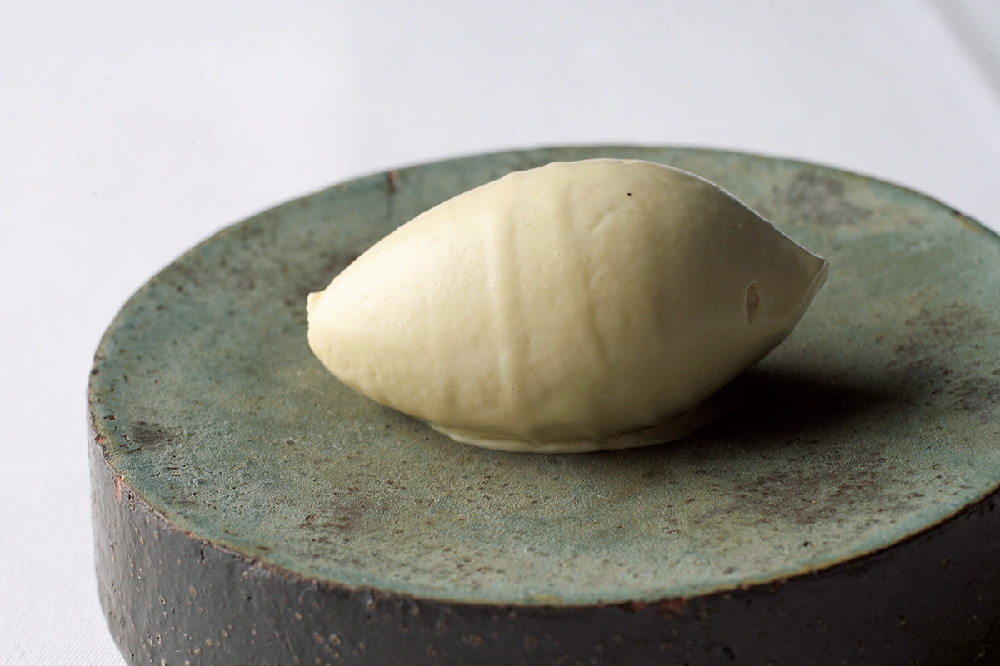
11. Сакэ-касу
Бланманже со вкусом сакэ-касу, выжимок от производства сакэ, подают с соусом из гибискуса и маракуйи. Молоко и сливки с сакэ-касу напоминают сладкий рисовый напиток амадзакэ. Амадзакэ пьют с имбирём, а к выжимкам так же хорошо идёт кислинка фруктов.
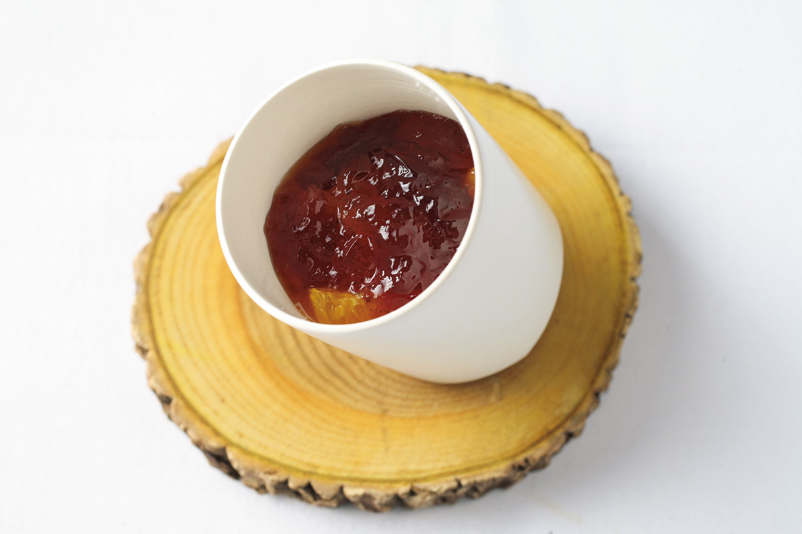
Вино
Что пить с дичью
В винной карте для дичи критик выбрала три бутылки. «Классика» с плотным, концентрированным вкусом: Château La Nerthe Châteauneuf-du-Pape за 8800 иен. «Необычное»: сладкое эльзасское Rolly Gassmann Gewurztraminer за 9800 иен. «С изюминкой»: белое вино из ЮАР тоже за 9800 иен (цены 2021 года).
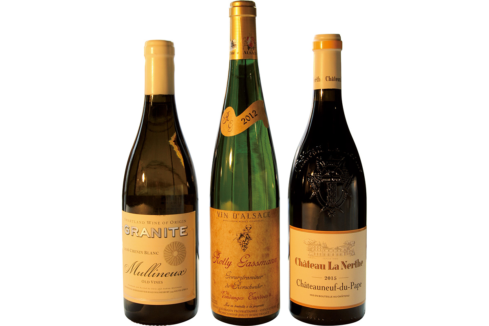
Фермеры
Кто растит овощи для шефа
NO BLUE
Хозяин фермы NO BLUE работал на «Биофарм Мацуки» в те же годы, что и Кавасаки, и в 2014 году завёл своё хозяйство. Сначала он выращивал до 60 видов овощей, а с 2019 года перешёл на один: гигантский лопух «Одэо гобо». Он сладкий, мягкий и с очень японским вкусом. Такие продукты будят фантазию поваров.
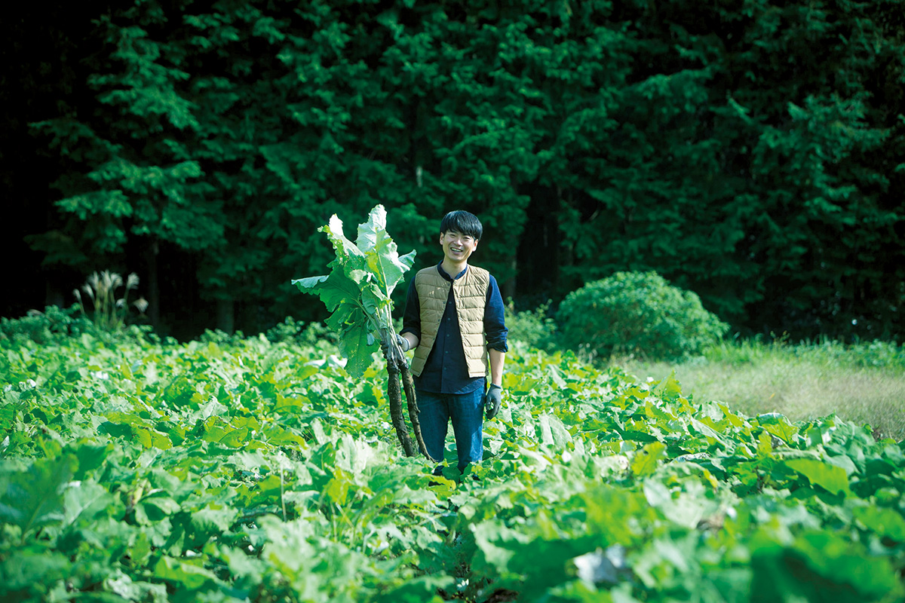
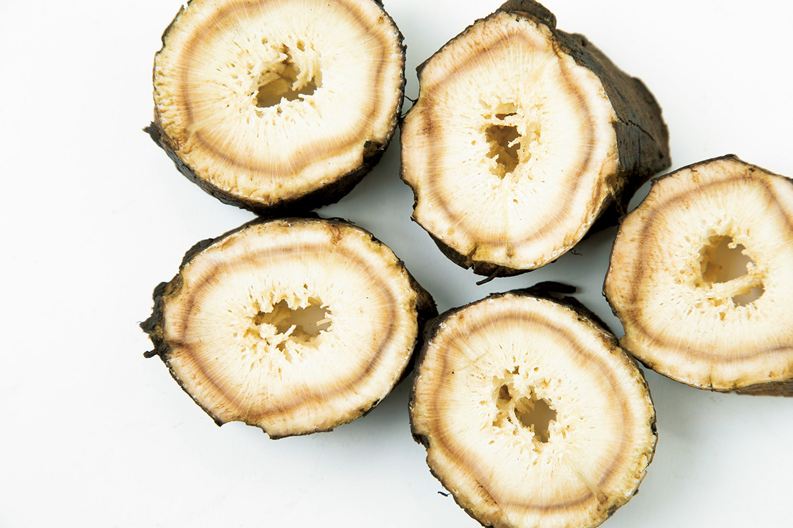
«Юносая»
Хозяин фермы «Юносая» сменил несколько профессий и в 30 лет открыл для себя органическое земледелие. Он работает без пестицидов и старается раскрыть то, что заложено в самих овощах, чтобы в них чувствовался характер земли. Его девиз: безопасно, надёжно, вкусно. Ежемесячный «набор сезонных овощей» пользуется большим спросом.
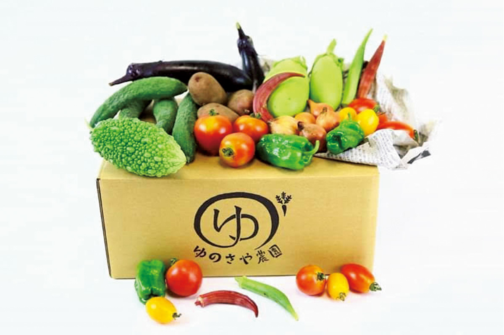
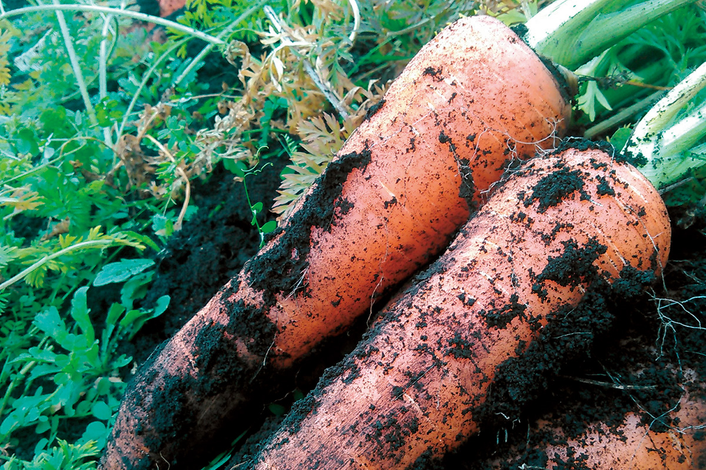
Ресторан
Ёсинори Кавасаки и его KAWASAKI
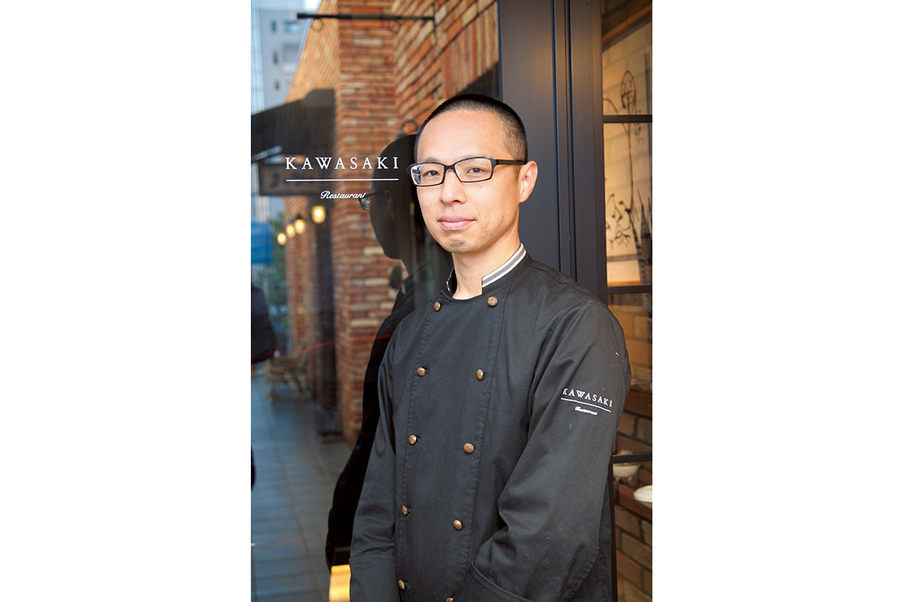
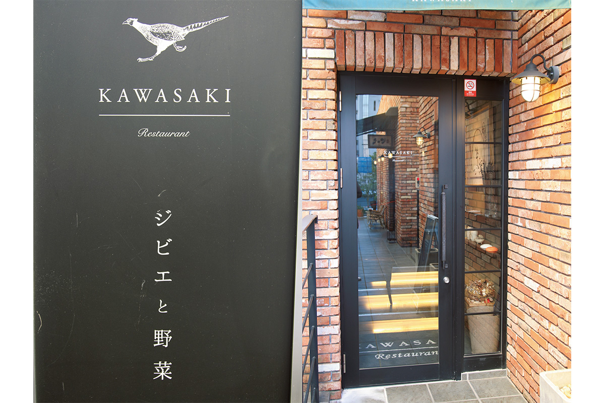
KAWASAKI
- Адрес
- префектура Сидзуока, Сидзуока, район Аой, Токива-тё, 1-8-5, BROOKLYN SQUARE, 2-й этаж
- Телефон
- +81 54-272-0066
- Часы работы
- 12:00–13:30 (последний заказ), 18:00–21:00 (последний заказ)
- Выходные
- нерегулярные
- Цены / Вход
- дегустационный курс 10 000 иен, курс из дичи 12 000 иен (без налога, с обслуживанием)
Фото: Мунэаки Маэда.